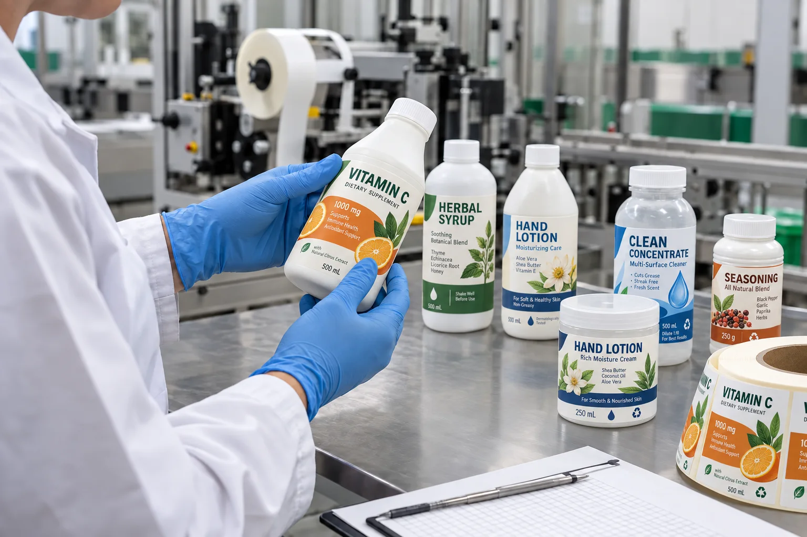

Short answer
Labels for HDPE and PP containers need an adhesive selected for low-surface-energy plastic, plus a face material that fits the container's stiffness. A rigid PP jar and a soft HDPE squeeze bottle should not be treated as the same job simply because both are plastic.
At the quote desk, buyers often send a bottle photo and ask for waterproof BOPP. BOPP may be sensible, but it does not answer the hardest question: can the adhesive wet out this exact molded surface? The prettiest film in the sample book still loses if its edges rise after filling.
Why HDPE and PP are harder to label
Pressure-sensitive adhesive forms a bond by flowing into microscopic surface irregularities. HDPE and PP generally offer less surface energy than glass, metal or many coated papers, so that wet-out can be more difficult. Add mold-release residue, textured walls or a bottle that flexes, and a standard adhesive may show acceptable initial tack but weak long-term hold.
| Container condition | What can happen | First production check |
|---|---|---|
| Rigid smooth PP jar | Good center bond but lifted corners | Adhesive compatibility and corner radius |
| Soft HDPE bottle | Creasing or edge movement during squeezing | Conformable film and stable label panel |
| Textured molded surface | Incomplete contact beneath the label | Move to a smoother panel or test a matched adhesive |
| Cold or damp container | Weak initial tack | Application temperature and surface dryness |
A typical inquiry: the sample sticks, the production bottle does not
Consider a composite planning example, not a claimed customer case. A sauce brand tests a film label on ten empty HDPE bottles from its office. All ten look fine. The production bottles arrive from a different molding batch, are filled cold and move straight to labeling. Two days later, the edges begin to flag.
The first reaction is usually to blame the printer. I understand it; the label is the visible part. But we would compare bottle batches, application temperature, surface residue and the time allowed for the bond to build. A label supplier can choose a better construction, but cannot make those variables disappear by renaming the glue "extra strong."
Choose face material and adhesive as one construction
| Direction | Where it can win | Where it can lose |
|---|---|---|
| White BOPP | Rigid or semi-rigid packs needing opacity and moisture resistance | Very soft bottles may need greater conformability |
| Clear BOPP | Smooth containers and a no-label appearance | Surface texture and bubbles remain visible |
| Conformable film | Flexible walls and repeated squeezing | May add cost where a rigid jar does not need it |
| Paper | Dry, rigid jars with a tactile brand direction | Moisture, flexing and difficult adhesion reduce tolerance |
Paper deserves a fair win on a dry, rigid PP jar when touch and print character matter. Film is not automatically more professional. It simply gives a wider operating window when water, flex or wiping enters the job.
Factory-side view
We sell labels, but sometimes the bottle panel is the real problem
If a brand places a tall rectangle across a texture change and deep side curve, recommending a more aggressive adhesive is an easy quote. Recommending a smaller label is often the better answer.
A label that uses less area but stays flat will look more expensive than a large label fighting the package.
How to run a useful adhesion test
- Use containers from the intended production supplier and molding batch where possible.
- Clean only with the same method used on the real line.
- Apply at the expected bottle and room temperature with firm, even pressure.
- Inspect initial contact, then check again after 24 and 72 hours.
- Fill, squeeze, refrigerate or expose the package to product splash as required.
- Record whether failure occurs at the edge, face material or adhesive interface.
Send the resin type, bottle photos, filled-bottle dimensions and storage process with the quote. For flexible walls, also read Labels for Squeeze Bottles. For general diagnosis, see Why Bottle Labels Peel Off.
Frequently asked questions
Why do labels peel from HDPE bottles?
HDPE has relatively low surface energy, which makes it harder for pressure-sensitive adhesive to wet out and form a reliable bond. Surface contamination, bottle flex and label geometry can add to the problem.
What label material works on polypropylene jars?
White or clear film is often a practical starting point, but the face material is only half the decision. The adhesive must be matched to the actual PP surface and tested after filling and storage.
Will a stronger permanent adhesive fix edge lift?
Not always. Edge lift can also come from a curved panel, an oversized label, mold-release residue, cold application or a container wall that flexes. Diagnose the package before changing only the adhesive.
How long should an adhesion test run?
Check initial tack, then inspect samples after 24 hours and again after the intended filling, storage and handling cycle. Adhesive performance can change as the bond builds and the container moves.
Related label guides
- Direct Thermal vs Thermal Transfer Labels
- Hot Foil vs Cold Foil vs Metallic Ink Labels
- Wash-Off Labels for PET Recycling: Buyer Guide
Review the complete label construction
Send the package photos, material, finished label size, quantity by artwork, storage conditions and application method. We can review fit, material and production details before preparing a quote and digital proof.